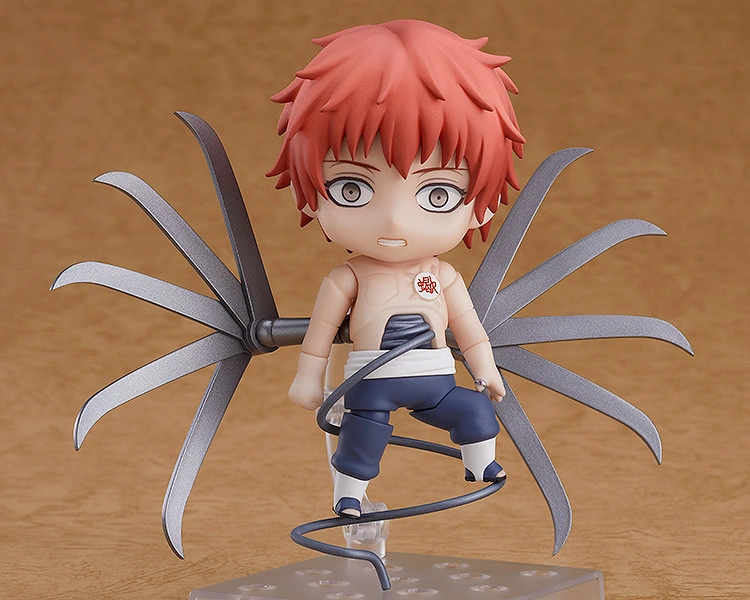
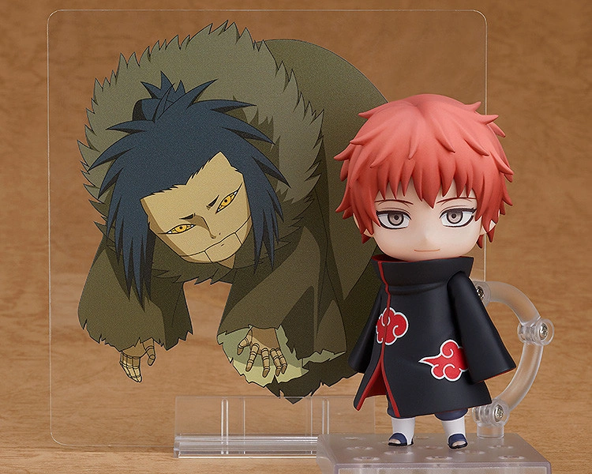

Sasori (サソリ, Sasori), renowned as Sasori of the Red Sand (赤砂のサソリ, Akasuna no Sasori), was an S-rank missing-nin from Sunagakure's
Puppet Brigade and a member of Akatsuki, where he was partnered with Orochimaru and later Deidara.


From the popular anime series "Naruto Shippuden" comes a Nendoroid of Sasori of the Red Sand, the ninja who defected
from the Village Hidden in the Sand.
He comes with three face plates including a standard expression, a combat expression and a serious expression are included.
His Akatsuki cloak is removable, allowing you to display him with it on or off. Optional parts include his back blades and abdomen wire.
A clear sheet featuring Sasori's puppet of the Third Kazekage is included as well! Be sure to add him to your collection!
